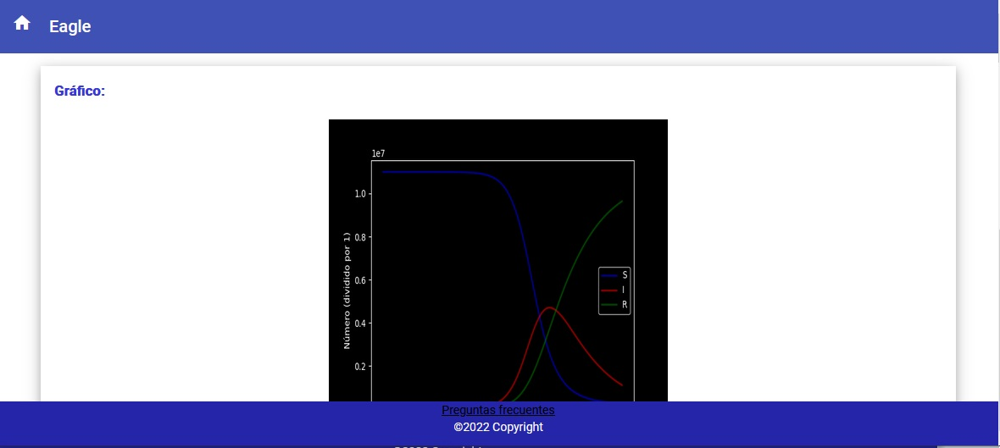
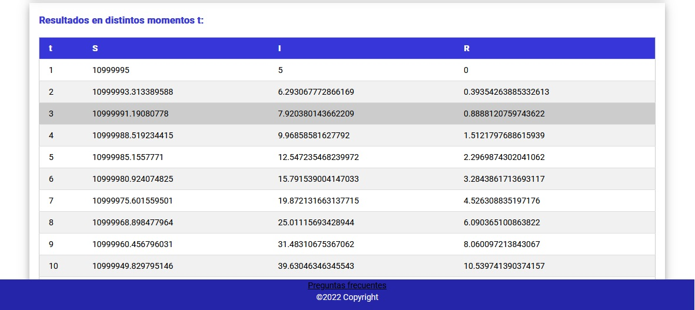
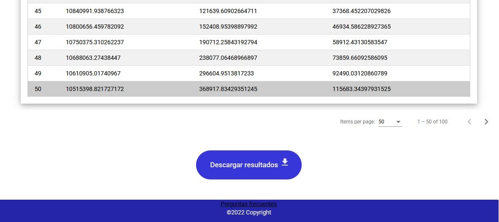

Eagle es una aplicación que busca resolver el problema de estimación de parámetros en
modelos epidemiológicos, graficando la solución; y que además, da la posibilidad de resolver
numéricamente dicho modelo.
¿Qué modelos epidemiológicos pueden ser usados?
El software trabaja con prototipos de modelos epidemiológicos, entre ellos se pueden encontrar:
SI, SIR, SIRS y SEIR. A continuacion se muestra donde se escoge el prototipo.
¿Cómo se resuelve numéricamente un modelo?
Para resolver numéricamente un modelo, previamente seleccionado su prototipo, se debe introducir
los parámetros y variables iniciales correspondientes a dicho modelo, se escoge un método numérico
para resolverlo (por defecto se encuentra RK45), se escoge un valor para t (por defecto es
10), se introduce una población total, se da la opción de escoger si se quiere adimensionalizar y
por último, se da clic en "Resolver numéricamente".
Luego, se muestran los respectivos resultados, con la graficación de los mismos, dando, además, la
posibilidad de descargarlos en .pdf.


Para descargar el .pdf se debe dar clic en el botón "Descargar".

Nota: Si no tiene conocimiento de quien es t o qué es adimensionalizar más adelante se explican en
la sección "Explicación de algunos conceptos".
¿Cómo se estiman parámetros en un modelo?
Para estimar parámetros en un modelo, previamente seleccionado su prototipo, se debe introducir
los parámetros y variables iniciales correspondientes a dicho modelo, se seleccionan los parámetros
a estimar, se escoge un método numérico para resolver el modelo (por defecto se encuentra RK45), se
escoge un valor para t (por defecto es 10), se introduce una población total, se da la opción de
escoger si se quiere adimensionalizar y por último, se da clic en "Estimar parámetros".
Después aparece otro formulario a llenar, donde se debe seleccionar un método clásico, una
metaheurística o ambos, se tiene que cargar un archivo de datos en formato .xlsx (debe contener
los valores reales conocidos de las variables del modelo) y por último, se da clic en el botón
"Estimar los parámetros".
Luego, se muestran los respectivos resultados, con la graficación de los mismos y los parámetros
óptimos estimados, dando, además, la posibilidad de descargarlos en .pdf.
Nota: Al seleccionar alguna de las metaheurísticas, aparecen valores máximos y mínimos para cada
parámetro, que por defecto son 0 y 1 respectivamente, además, aparecen nuevos datos a llenar en
dependencia de la metaheurística escogida, en la sección "Explicación de algunos conceptos" se
explicará el uso de los mismos.
¿Cuáles métodos numéricos se pueden usar?
-RK45: método explícito de Runge-Kutta de orden 5(4),el error se controla asumiendo la precisión del
método de cuarto orden, pero se toman medidas utilizando la fórmula precisa de quinto orden. -RK23: método explícito de Runge-Kutta de orden 3(2). El error se controla asumiendo la precisión
del método de segundo orden, pero se toman medidas utilizando la fórmula precisa de tercer
orden. -DOP853: método explícito de Runge-Kutta de orden 8. -Radau: método implícito de Runge-Kutta de la familia de orden Radau IIA 5. El error se controla con
una fórmula incrustada precisa de tercer orden. -BDF: método implícito de orden variable de varios pasos (1 a 5) basado en una fórmula de
diferenciación hacia atrás para la aproximación derivada. -LSODA: método Adams/BDF con detección y cambio automáticos de rigidez.
¿Cuáles metaheurísticas se pueden usar?
-PSO: optimización por enjambres de partículas. -DE: evolución diferencial.
¿Cuáles métodos clásicos se pueden usar?
-Powell: algoritmo de Powell. -TNC: Algoritmo de Newton truncado. -L-BFGS-S: método Cuasi Newton. -SLSQP: método de secuenciación cuadrática.
¿El archivo de datos .xlsx debe seguir algún formato?
Sí, debe tener tres columnas: Infectados, Recuperados y Latentes, respectivamente.
Explicación de algunos conceptos
-Valor para t: indica el valor máximo de tiempo hasta el cual llega la solución numérica del modelo.
-Adimensionalizar: para estudiar el comportamiento de las poblaciones en mucha literatura se realiza un
proceso de adimensionalización, donde se hace un cambio de variable S(t)/N y I(t)/N, en lugar de S(t)
y I(t), donde N es el tamaño de la población.
-Cantidad de iteraciones: indica la cantidad de iteraciones con las cuales va a trabajar
la metaheurística seleccionada.
-Cantidad de partículas: es un parámetros de la metaheurística PSO, que indica la cantidad de
partículas con las cuales trabajará el enjambre.
-Parámetro cognitivo: es un parámetros de la metaheurística PSO, controla la influencia que tiene
la mejor solución que ha encontrado la partícula k en su recorrido, sobre el cálculo de la
velocidad en la iteración t + 1.
-Parámetro de inercia: es un parámetros de la metaheurística PSO, regula la influencia que posee
la velocidad vk, de la iteración t,en el cálculo de la velocidad en la iteración t + 1.
-Parámetro social: es un parámetros de la metaheurística PSO, representa el peso que tiene la mejor
solución encontrada por el enjambre, sobre el cálculo de vk en t+1.
-Población: es un parámetros de la metaheurística DE, establece el tamaño total de la población.
-Factor de cruzamiento: es un parámetros de la metaheurística DE, es el factor de escala de la
mutación, que afecta la velocidad con la cual evoluciona la población, debe estar en el rango [0,2].
-Factor de escalado: es un parámetros de la metaheurística DE, es la constante de recombinación
debe estar en el rango [0, 1], también se conoce como probabilidad de cruce. El aumento de este
valor permite que una mayor cantidad de mutantes progresen a la siguiente generación, pero a
riesgo de la estabilidad de la población.